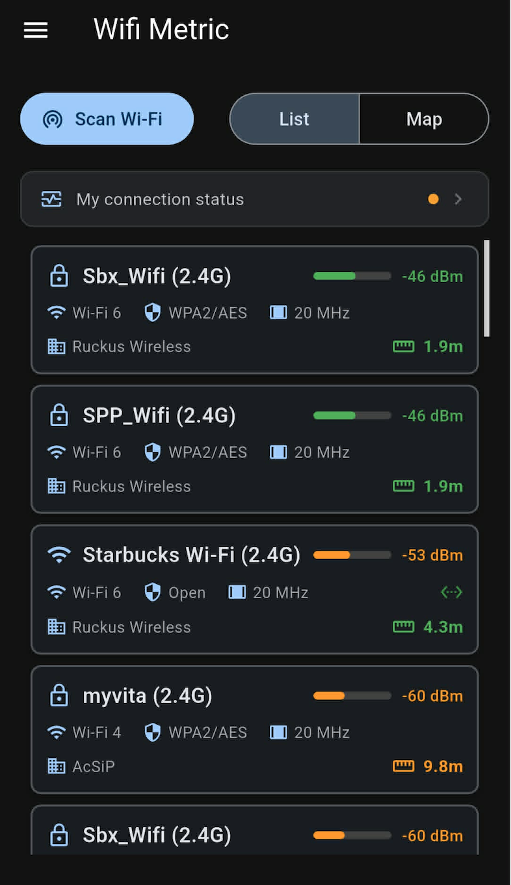
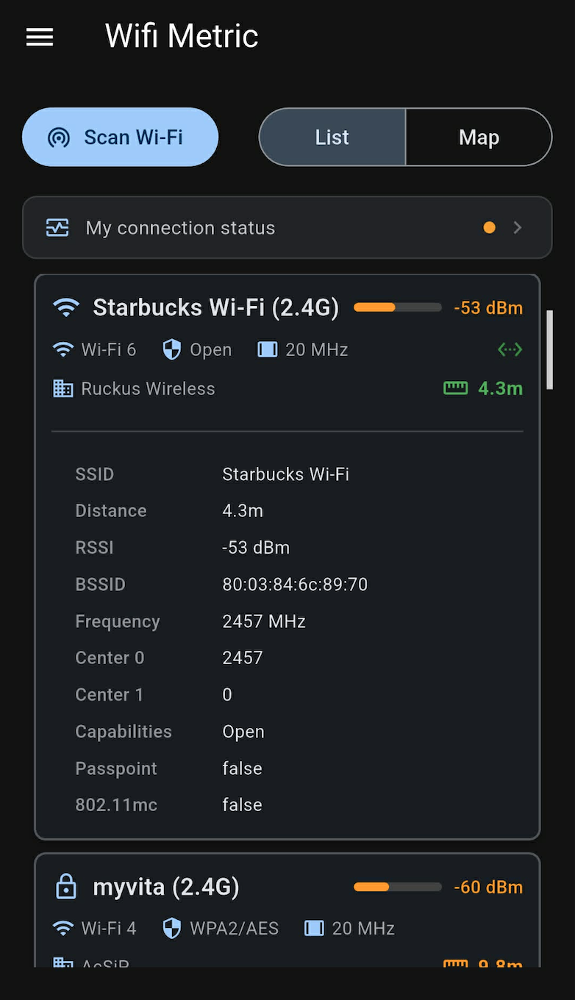
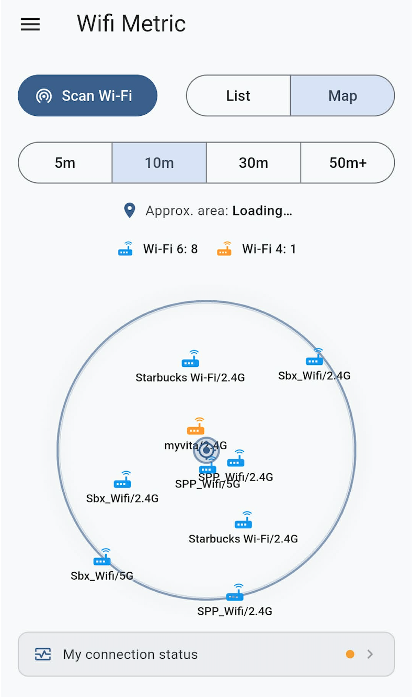
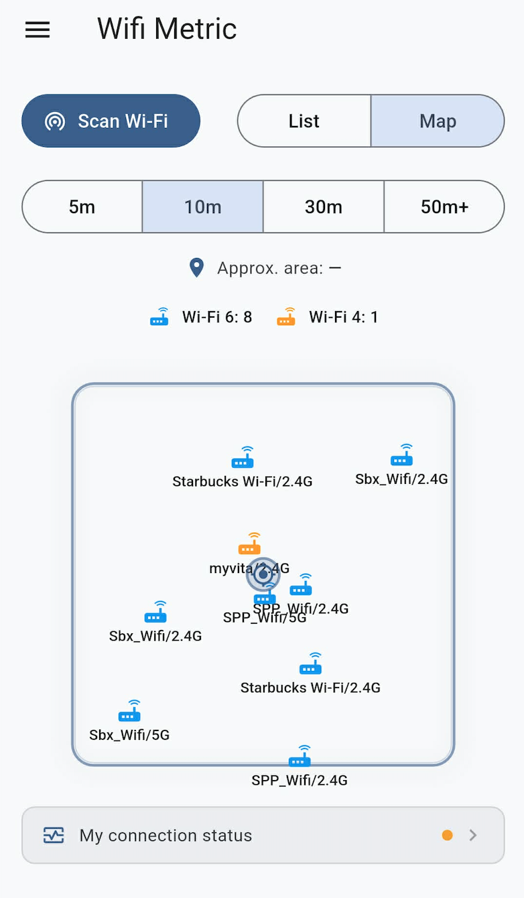

Android · WiFi 4 / 5 / 6 · 2.4 GHz / 5 GHz
WiFi Metric WiFi Metric
Professional WiFi Analyzer to scan nearby networks with Map & List View. Real dBm data, not just signal bars. 專業 WiFi 分析工具，提供 List 清單與 Map 地圖雙檢視，顯示真實 dBm 數值，不只是訊號格數。
Android · WiFi 4 / 5 / 6 · 2.4 GHz / 5 GHz
Professional WiFi Analyzer to scan nearby networks with Map & List View. Real dBm data, not just signal bars. 專業 WiFi 分析工具，提供 List 清單與 Map 地圖雙檢視，顯示真實 dBm 數值，不只是訊號格數。
Everything a network engineer or power user needs to diagnose and optimize wireless coverage — in your pocket. 網路工程師與進階使用者所需的一切無線診斷工具，隨身攜帶。
Instantly detect all nearby access points and hidden networks. Updates in real time with every scan. 即時偵測附近所有 AP（包含隱藏網路），每次掃描後立即更新清單。
Real-time RSSI monitoring in dBm — the true measure of signal power, beyond misleading icon bars. 以 dBm 顯示真實 RSSI，擺脫系統訊號格誤導，掌握實際訊號強度。
Visualize AP distribution spatially within a configurable radius (5 m · 10 m · 30 m · 50 m+). 以圓形或方形地圖呈現 AP 空間分布，半徑可選 5m、10m、30m、50m+。
Tap any network to reveal SSID, BSSID, channel frequency, channel width, encryption type, and estimated distance. 點擊任意網路可查看 SSID、BSSID、頻道、頻寬、加密方式及估算距離。
Quickly identify open vs. protected networks (WPA2/AES, WPA3). Know which networks are safe before connecting. 快速辨別開放與加密網路（WPA2/AES、WPA3），連線前先確認安全性。
Compare multiple SSIDs side-by-side, sorted by signal strength. Ideal for channel interference analysis. 多 SSID 並排比較，依訊號強度排序，快速識別頻道干擾問題。
Two views, one powerful tool — List for data density, Map for spatial awareness. 兩種視圖，一個強大工具 — List 清單提供資料密度，Map 地圖呈現空間感知。

All nearby APs sorted by signal strength. Color-coded RSSI bars (green / orange) show signal quality at a glance. 依訊號強度排序所有鄰近 AP，RSSI 色條（綠色／橘色）讓訊號品質一目了然。

Tap a network to expand full metadata: BSSID, frequency, channel center, capabilities, Passpoint, and 802.11mc support. 點擊網路展開完整資訊：BSSID、頻率、中心頻道、Capabilities、Passpoint 及 802.11mc 支援。

APs plotted on a circular map centered on your device. Proximity rings reflect estimated distance in meters. 以裝置為中心的圓形地圖，AP 位置依估算距離（公尺）分布於同心圓上。

Rectangular area layout showing the relative positions of all detected APs — useful for floor-plan mapping. 矩形區域佈局，顯示所有偵測 AP 的相對位置，適用於平面圖規劃場景。
Everything the app exposes per access point, straight from the Android WiFi scanning APIs. App 對每個 AP 所呈現的所有資訊，直接來自 Android WiFi 掃描 API。
| SSID | Network name (human-readable identifier) 網路名稱（人類可讀識別碼） |
| BSSID |
MAC address of the access point (e.g. 80:03:84:6c:89:70)
AP 的 MAC 位址（例如 80:03:84:6c:89:70）
|
| RSSI |
Signal power in dBm
訊號強度，單位 dBm
≥ −50 dBm Excellent −50 ~ −70 dBm Good < −70 dBm Weak |
| Frequency / Channel | Operating frequency in MHz and derived 802.11 channel number 工作頻率（MHz）及對應的 802.11 頻道編號 |
| Channel Width | 20 MHz / 40 MHz / 80 MHz / 160 MHz |
| Center 0 / Center 1 | Primary and secondary center frequency segments for wide channels 寬頻道的主要與次要中心頻率區段 |
| Capabilities | Encryption & auth protocols: Open / WPA2-AES / WPA3-SAE … 加密與驗證協定：Open / WPA2-AES / WPA3-SAE … |
| WiFi Generation | Wi-Fi 4 (802.11n) · Wi-Fi 5 (802.11ac) · Wi-Fi 6 (802.11ax) |
| Distance (est.) | Estimated distance in meters derived from RSSI and frequency via free-space path loss model 以 RSSI 與頻率透過自由空間路徑損耗模型估算的距離（公尺） |
| Vendor / OUI | AP manufacturer resolved from BSSID OUI lookup 從 BSSID OUI 查詢解析的 AP 製造商 |
| Passpoint | Hotspot 2.0 / Passpoint support flag Hotspot 2.0 / Passpoint 支援旗標 |
| 802.11mc | Fine Timing Measurement (FTM) support — enables more accurate ranging 精細時序測量（FTM）支援，可提升測距精度 |
WiFi Metric requires two system permissions. Here's exactly why — no hidden data collection. WiFi Metric 需要兩項系統權限。以下說明確切原因，不含隱藏資料蒐集。
Android · Free Download
Download WiFi Metric and get real signal data in seconds. 立即下載 WiFi Metric，幾秒內取得真實訊號數據。
Google Play Google Play 下載